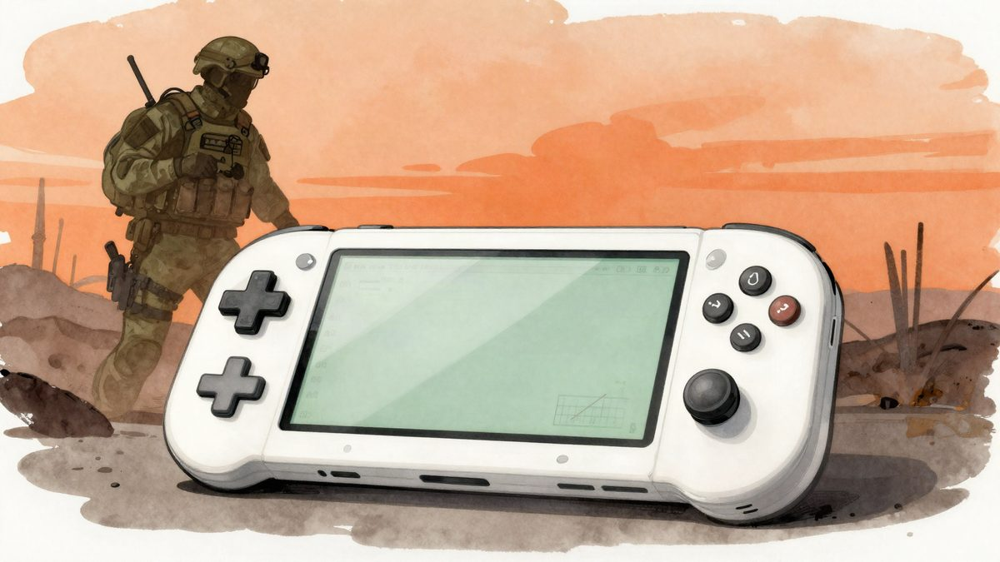

Call of Duty: Warzone izašao na Nintendo Switch 2, besplatan je i bez kupnje Modern Warfarea 4

Call of Duty: Warzone pojavio se bez najave na Nintendo Switchu 2. Besplatan je u eShopu i ne traži kupnju Modern Warfarea 4. Istodobno su 6. studenoga trajno ugašeni serveri za PlayStation 4 i Xbox One.
Call of Duty: Warzone izašao je na Nintendo Switchu 2 bez najave. Battle royale je besplatan, nalazi se u Nintendo eShopu, a za pristup nije potrebno kupiti Modern Warfare 4.
Warzone je novi korak u povratku serijala Call of Duty na Nintendove platforme. Modern Warfare 4 bio je prvi naslov iz serijala na Nintendovu hardwareu nakon igre Call of Duty: Ghosts na konzoli Wii U.
Kraj podrške za prethodnu generaciju
Warzone je stigao s prvom sezonom Modern Warfarea 4, a uz nju je došla i druga promjena. Od nove sezone Warzone više ne podržava PlayStation 4 i Xbox One. Serveri za te konzole trajno su ugašeni 6. studenoga.
Igračima koji još nisu prešli na aktualnu generaciju to je loša vijest, no napredak mogu zadržati na bilo kojem podržanom hardwareu ako koriste isti Activision račun.
DMZ besplatno do 11. studenoga
Postoji i dobra vijest. Način rada DMZ iz Modern Warfarea 4 može se besplatno isprobati do 11. studenoga.
Modern Warfare 4 dobio je široke pohvale kritike, a Insider Gaming objavio je i recenziju njegove kampanje.
Warzone je u Nintendo eShopu naveden kao dostupan.
Izvor: Insider Gaming
Povezani članci
- Activision se ispričao zbog snimki tragedije u Itaewonu u igri Modern Warfare 430. listopada 2026.
- Nvidia driver 621.01 uvodi Microsoftov Advanced Shader Delivery za brže pokretanje igara21. listopada 2026.
 Far Cry Instincts Predator Recomp: Xbox 360 igra iz 2006. izvorno radi na PC-ju12. studenoga 2026.
Far Cry Instincts Predator Recomp: Xbox 360 igra iz 2006. izvorno radi na PC-ju12. studenoga 2026.